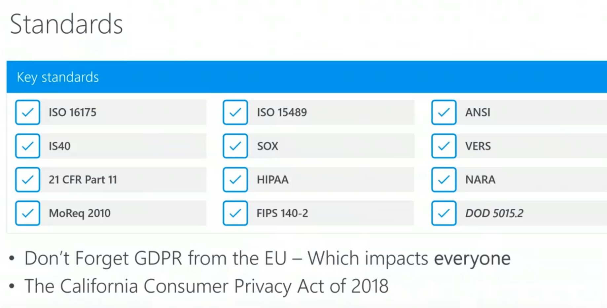
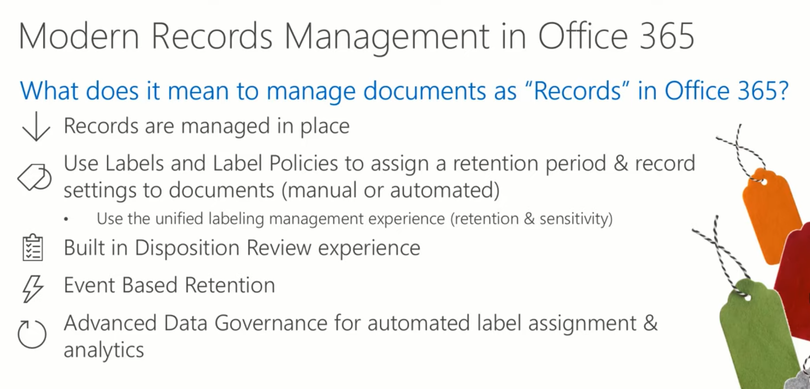
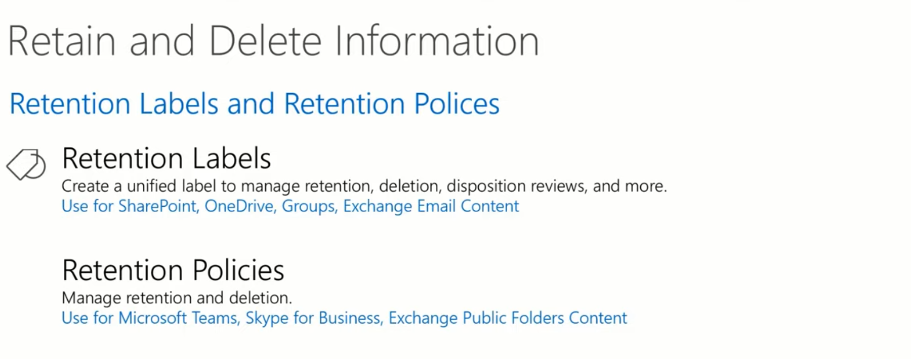
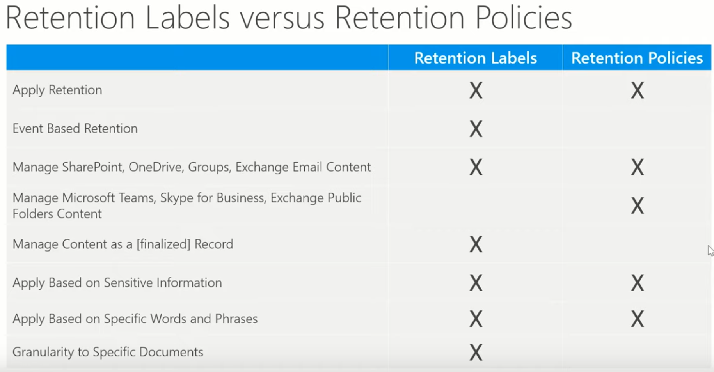
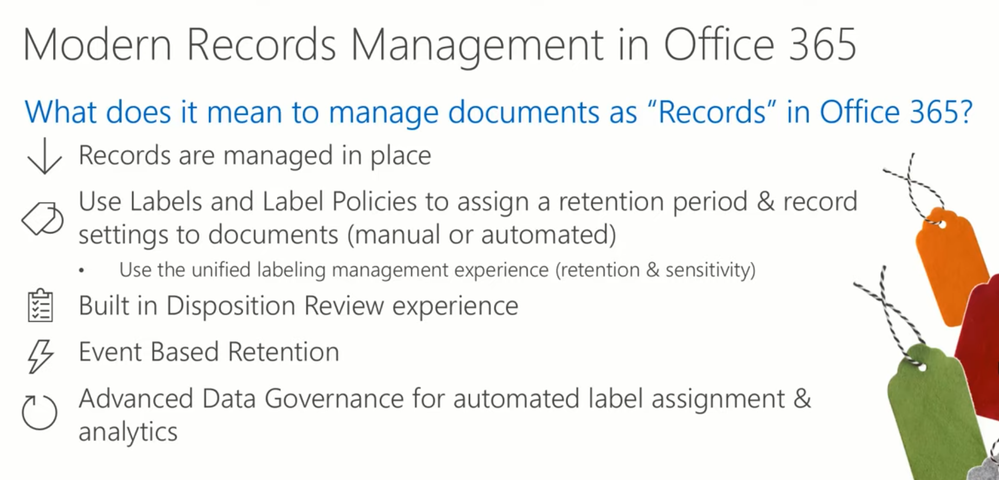
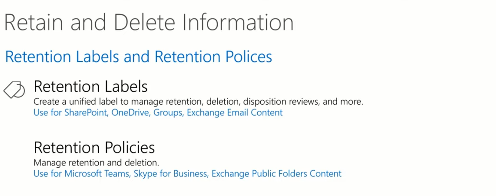
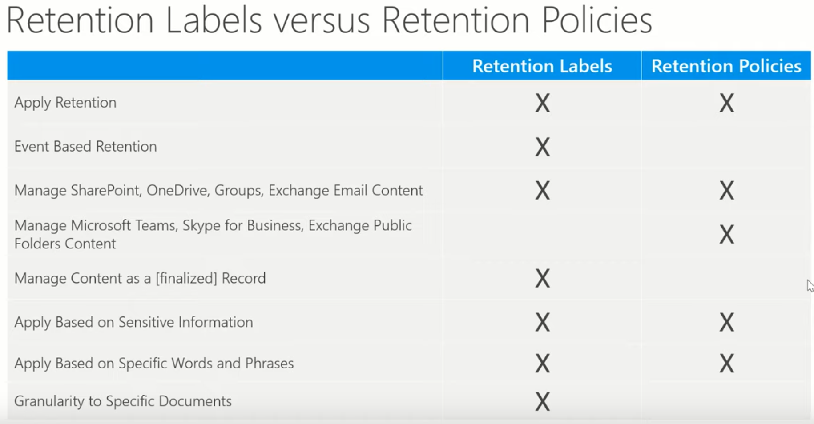
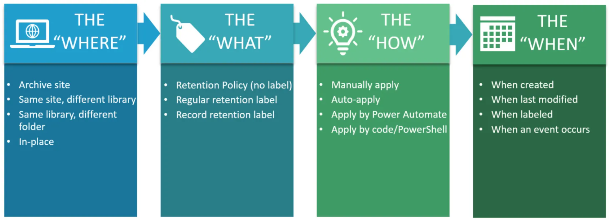

Governance¶
Collaboration¶
- Planning intranet governance
- Overview of collaboration governance in Microsoft 365
- Groups services interactions
Overview¶
- SharePoint governance questions
- Plan for governance in Office 365 Groups
- Plan for governance to transform teamwork with Microsoft 365
- How to implement SharePoint Governance
- overview-best-practices-for-managing-how-people-use-your-team-site
- Naming policy features
- The Ultimate SharePoint Governance Template
- Office 365 Group Naming Policy: Deciding if it’s Right For You
- 8 Ways to Create Office 365 Groups – Overview and Differences
Information Architecture¶
- Information architecture in modern SharePoint
- One Size Does Not Fit All
- 3 Dimensions of IA
- The Logical Dimension
- The Metadata Dimension
- Content Type Hub. What’s vNext
SharePoint Home Site¶
Content Type¶
- Content Type Benefits in Modern SharePoint
- CHOICE, LOOKUP OR MANAGED METADATA?
- BUILD TARGETED TRAINING ON OFFICE 365 ADOPTION CENTER
- BUILD A MODERN COMPANY LOCATIONS PAGE IN MINUTES
- CONTENT TYPE FILTERS IN MODERN SHAREPOINT
- MULTIPLE LIBRARIES, FOLDERS OR METADATA
ImageMap¶
-Create Simple ImageMap in SPO
Permission¶
- 28 REASONS WHY MODERN SHAREPOINT ONLINE SITE PERMISSIONS ARE A HOT MESS
- Sharing and permissions in the SharePoint modern experience
- How Broken Are Office 365 SharePoint Permissions
- Azure AD Internal - GDPR Tool
- Making a real world sharing strategy for SharePoint, OneDrive & Teams
- SharePoint Modern Sites permission difference handling (Communication versus Teamsite)
- MS Teams Channel / SharePoint permission inconsistency
- Modern Authentication
External Sharing¶
- A quick guide to secure Office 365_DE.pdf
- Coaching your users through the External Sharing Experience
- How to secure external sharing in SharePoint Online and Office 365
- Change External Sharing Settings Across a Hub Site with PowerShell
-
How to properly configure sharing settings in the SharePoint Admin Center
Organization Asset Libraries¶
- SharePoint Organization Asset Libraries Explained
- Enable Organization assets on SharePoint Online
- How to create an Organisation Assets library in SharePoint Online to store Office Templates
- Use SharePoint Libraries to distribute Office Templates and Company images
User profile / Delete user¶
External user¶
SiteCollections versus SubSites¶
Tips Creating Sites¶
- Exploring creating SharePoint TeamSites using SiteDesign and the REST API
- Balancing Self-Service with Governance and Control in Office 365
Backup¶
- Does Office 365 require a backup solution?
- Compare Backup Solutions SkyKick and Veeam
- Does Office 365, hosted by Microsoft requires a data backup solution
Audit/Usage Reports¶
- Admindroid - Office 365 Management Made Easy
- 6 ways to check SharePoint Usage reports
- How to audit employees in SharePoint Online and Office 365
- Get SPO sites with filter using SPOSitePropertiesEnumerableFilter
- Retrieve Office 365 Audit logs using PowerShell and store in Azure table for quick retrieval
- Office 365 Groups and Teams Activity Report - obsolete groups
- Top 50 PowerShell Scripts for Microsoft 365 Admins
- ADEssentials - AzureAD Reporting
Scripts¶
- SPC18: What Options do You Have to Govern the Lifecycle of Office 365 Groups / Teams Ignite2018GroupsGovernanceToolkit
- PowerShell scripts for Microsoft Office 365
- Useful PowerShell cmdlets to administer Office 365 Groups – Part 1
- Useful PowerShell cmdlets to administer Office 365 Groups – Part 2
- THR2131 - Three PowerShell reports every Office 365 admin needs to have
- Manage your SharePoint Team Sites to Excel
- Extract information of Communication sites to Excel
- Five-PowerShell-Reports-For-Office365
AD Mistakes¶
- Most Common Mistakes in Active Directory and Domain Services – Part 1
- Most Common Mistakes in Active Directory and Domain Services – Part 2
- Most Common Mistakes in Active Directory and Domain Services - Part 3
Handling Teams and Groups¶
- Governance and consciousness around handling Teams and Groups
- Three reasons why you should take control of Office 365 Groups creation
- Automating Office 365 Groups Lifecycle/Expiration management
- Stop using Power Automate to govern Microsoft Teams
- Microsoft Teams Naming Best Practices
Tips¶
SAM¶
Security and Compliance - DLP¶
- Overview of data loss prevention
- Security and Compliance - DLP - Notes
- Compliance Customer Experience Engineering (CxE)
Records Management (RM)¶
- Managing and applying Purview retention labels using code
- Working with Purview event-based retention using code
- Finding incorrectly applied Purview retention labels
- Implications of applying Purview retention labels to folders
- Compliance Customer Experience Engineering (CxE) - (MIG/RM)
- Understanding Compliance and Records Management in Office 365- Video
- A Complete Guide to Office 365 Retention! - Video
- MIGScripts
- Microsoft 365 Compliancefeatures
- MIP and compliance capabilities - illustrations

 





Practise (German)¶
- Datensatzverwaltung in Microsoft 365
- Versionsverwaltung zur Aktualisierung von Datensätzen verwenden
- Datenschutzressourcen
Practise (English)¶
- Lifecycle of an item in SharePoint: Where does it go?
- Use retention labels to manage the lifecycle of documents stored in SharePoint
- RETENTION IN SHAREPOINT ONLINE: THE WHERE, WHAT, HOW, AND WHEN
